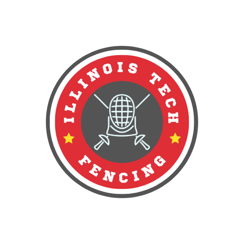

My name is Joshua Davenport. I am a student at Illinois Institute of Technology and my major is Applied Cybersecurity and information technology. If you want to learn more about my education and experience, take a look at my resume. Otherwise, I have many hobbies that include (but are not limited by) listening to music, gaming, watching YouTube, and fencing.
Generally my answer to "What kind of music do you listen to?" is indie rock, as most of my favorite bands are indie rock bands. In reality, I listen to all kinds of music and would consider myself generally knowledgable in popular music and artists. Recently I have had the song "Let Me Go" by YONLAPA on loop. Another song I've been binging a lot (but not quite as much) is "Lagoon" by Favored Nations. I definitely suggest you check out either of these songs and at least give them a try. And if you're open to listening to some music, you should check out one of my top three favorite bands:
I'm not going to go too much into depth on the games I play because I have a whole page dedicated to that here. Still, I will talk a little bit about some genres I enjoy in video games. My favorite genre of game is definitely the Japanese Role Playing Game, also known as JRPGs. JRPGs tend to be longer story driven games. Some popular JRPGs that you may have heard of are the Final Fantasy series, Chrono series, and even the Pokemon series.
I watch a variety of YouTube content for fun, varying from educational math videos, all the way to "The Five Dollar Foot Long Evolution" which, are surprisingly more related than you might think (no seriously search it up on YouTube). Most of the time though, I spend my time watching videos somewhat related to ITM, with some of my favorite YouTubers being Linus Tech Tips, SomeOrdinaryGamers, and NetworkChuck. Out of all my hobbies listed here, I definitely end up partaking in this one the most, even if I don't intend to. I go to YouTube to see if any of my favorite YouTubers uploaded and end up in a rabbit hole for the next 3 hours and have done nothing productive with my time. It has gotten to the point that around midterm and finals season I have to uninstall the app from my phone and not allow my browser to open the webpage with an extension.
You are absolutely correct, fencing is very cool. You get to stab people with long swords (safely), wear an admittedly goofy outfit, and feel like you're a swashbuckling pirate. If that sounds cool to you, you should know we have a fencing club here at IIT! There are several ways you can get in contact to join. You can email fencing@iit.edu, look for us in the club section of the IIT hub on Discord, or even better, click this link to join the server directly!
